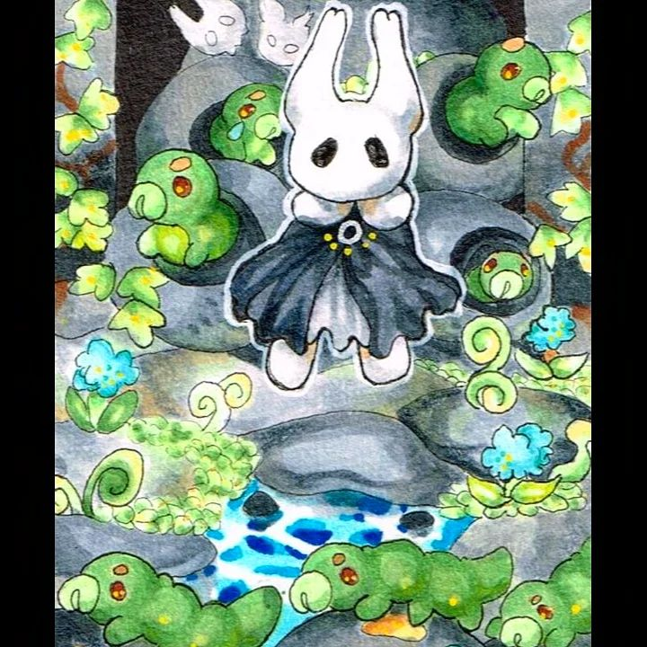
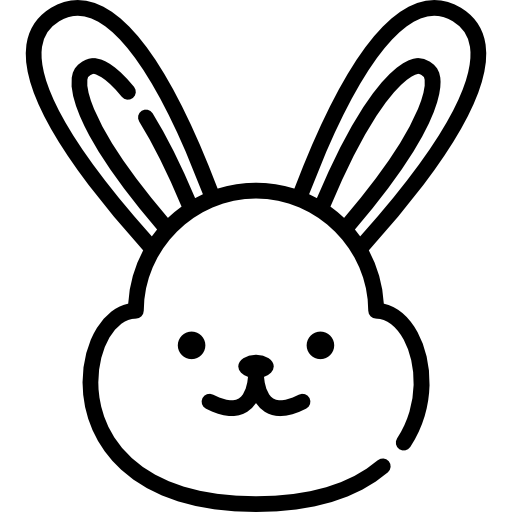

Sobre mi

Me centro en el arte tradicional, especializandome
con el uso de marcadores de base de alcohol. Mi estilo es
semi-realista, con muchos brillos y colores saturados pero puedo hacer trabajos
con colores más ''modestos''. Ciertamente tiene una gran influencia de la animación
japonesa con lo respecto a lo que ellos consideran tierno y lindo pero me gusta agregarle
también un toque de mi cambiando la anatomía y pintando con mi estilo.
Materiales que uso
Para hacer el lineart
- fibras stabilo
- copic multiliner 0.1, 0.05, 0.03, 0.2, 0.4
- unipin fine line gris y negro de tamaño 0.1
- tombow liner grueso y fino a base de agua
Marcas de marcadores de alcohol
- copic marker
- prismacolor
- winsor and newton
- kurecolor
Cuadernos que suelo usar
- SM.LT Art Universal Mixed media pad
- Copic paper
- Canson XL Marker, semi translúcido, blanco brillante, libre de ácido, 70 g
Para retocar el dibujo
- Lapices de colores polychromos de Faber Castle
- tinta blanca
- marcadores acrilicos Posca